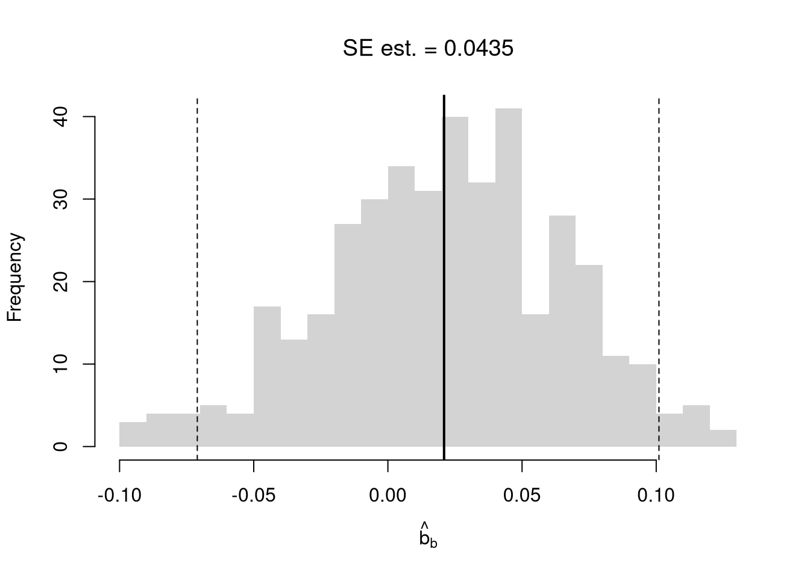

Code
# Bivariate Data from USArrests
xy <- USArrests[,c('Murder','UrbanPop')]
colnames(xy) <- c('y','x')
# Inspect Dataset
# head(xy)
# summary(xy)
plot(y~x, xy, col=grey(0,.5), pch=16)
title('Murder and Urbanization in America 1975', font.main=1)
Suppose we have some bivariate data: \(\hat{X}_{i}, \hat{Y}_{i}\). First, we inspect it as in Part I.
# Bivariate Data from USArrests
xy <- USArrests[,c('Murder','UrbanPop')]
colnames(xy) <- c('y','x')
# Inspect Dataset
# head(xy)
# summary(xy)
plot(y~x, xy, col=grey(0,.5), pch=16)
title('Murder and Urbanization in America 1975', font.main=1)
Now we will assess the association between variables by fitting a line through the data points using a “regression”.
This refers to fitting a linear model to bivariate data. Specifically, our model is \[\begin{eqnarray} \hat{Y}_{i}=b_{0}+b_{1} \hat{X}_{i}+e_{i}, \end{eqnarray}\] where \(b_{0}\) and \(b_{1}\) are parameters, often referred to as “coefficients”, and \(\hat{X}_{i}, \hat{Y}_{i}\) are data for observation \(i\), and \(e_{i}\) is a residual error term that represents the difference between the model and the data.
We then find the parameters which best-fit the data. Specifically, our objective function is \[\begin{eqnarray} \min_{b_{0}, b_{1}} \sum_{i=1}^{n} \left( e_{i} \right)^2 &=& \min_{b_{0}, b_{1}} \sum_{i=1}^{n} \left( \hat{Y}_{i} - [b_{0}+b_{1} \hat{X}_{i}] \right)^2. \end{eqnarray}\] Minimizing the sum of squared errors then yields two parameter estimates: \[\begin{eqnarray} 0 &=& \sum_{i=1}^{n} 2\left( \hat{Y}_{i} - [b_{0}+b_{1} \hat{X}_{i}] \right)\\ \hat{b}_{0} &=& \hat{M}_{Y}-\hat{b}_{1}\hat{M}_{X} \\ \end{eqnarray}\] where \(\hat{M}_{Y}\) and \(\hat{M}_{X}\) are sample means. Similarly, \[\begin{eqnarray} 0 &=& \sum_{i=1}^{n} 2\left( \hat{Y}_{i} - [b_{0}+b_{1} \hat{X}_{i}] \right) \hat{X}_{i} \\ \hat{b}_{1} &=& \frac{\sum_{i}^{n}(\hat{X}_{i}-\hat{M}_{X})(\hat{Y}_{i}-\hat{M}_{Y})}{\sum_{i}^{}(\hat{X}_{i}-\hat{M}_{X})^2} = \frac{\hat{C}_{XY}}{\hat{V}_{X}}, \end{eqnarray}\] the latter term being the estimated covariance between \(X\) and \(Y\) divided by the variance of \(X\).
# Run a Simple Regression
reg <- lm(y~x, dat=xy)
coef(reg)
## (Intercept) x
## 6.41594246 0.02093466
# predict(reg)
# resid(reg)
cov(xy[,'x'],xy[,'y'])/var(xy['x'])
## x
## x 0.02093466Once we have the coefficient, we can find the predictions \[\begin{eqnarray} \hat{y}_{i} &=& \hat{b}_{0}+\hat{b}_{1}\hat{X}_{i}\\ \hat{e}_i &=& \hat{Y}_{i}-\hat{y}_{i} \end{eqnarray}\]
First, we qualitatively analyze the ‘’Goodness of fit’’ of our model by plotting it against the data. For a quantitative summary, we can also compute the linear correlation between the model predictions and the sample data: \(\hat{R}_{yY} = \hat{C}_{yY}/[\hat{S}_{y} \hat{S}_{Y}]\). With linear models, we typically compute the “R-squared” statistic \(\hat{R}_{yY}^2\), also known as the “coefficient of determination”, using the sums of squared errors (Total, Explained, and Residual) \[\begin{eqnarray} \underbrace{\sum_{i}(\hat{Y}_{i}-\hat{M}_{Y})^2}_\text{TSS} =\underbrace{\sum_{i}(\hat{y}_i-\hat{M}_{Y})^2}_\text{ESS}+\underbrace{\sum_{i}\hat{e}_{i}^2}_\text{RSS}\\ \hat{R}_{yY}^2 = \frac{\hat{ESS}}{\hat{TSS}}=1-\frac{\hat{RSS}}{\hat{TSS}} \end{eqnarray}\]
# Manually Compute R2
Ehat <- resid(reg)
RSS <- sum(Ehat^2)
Y <- xy[,'y']
TSS <- sum((Y-mean(Y))^2)
R2 <- 1 - RSS/TSS
R2
## [1] 0.00484035
# Check R2
summary(reg)$r.squared
## [1] 0.00484035
# Double Check R2
R <- cor(xy[,'y'], predict(reg))
R^2
## [1] 0.00484035A regression coefficient is a statistic. And, just like all statistics, we can estimate it’s variability using a
Note that values reported by your computer do not necessarily satisfy this definition. To calculate these statistics, we will estimate variability using data-driven methods. (For some theoretical background, see https://www.sagepub.com/sites/default/files/upm-binaries/21122_Chapter_21.pdf.)
We first consider the simplest, the jackknife. In this procedure, we loop through each row of the dataset. And, in each iteration of the loop, we drop that observation from the dataset and reestimate the statistic of interest. We then calculate the standard deviation of the statistic across all subsamples.
# Jackknife Standard Errors for OLS Coefficient
jack_regs <- lapply(1:nrow(xy), function(i){
xy_i <- xy[-i,]
reg_i <- lm(y~x, dat=xy_i)
})
jack_coefs <- sapply(jack_regs, coef)['x',]
jack_se <- sd(jack_coefs)
# classic_se <- sqrt(diag(vcov(reg)))[['x']]
# Jackknife Sampling Distribution
hist(jack_coefs, breaks=25,
main=paste0('SE est. = ', round(jack_se,4)),
font.main=1, border=NA,
xlab=expression(hat(b)[-i]))
# Original Estimate
abline(v=coef(reg)['x'], lwd=2)
# Jackknife Confidence Intervals
jack_ci_percentile <- quantile(jack_coefs, probs=c(.025,.975))
abline(v=jack_ci_percentile, lty=2)
# Plot Normal Approximation
# jack_ci_normal <- jack_mean+c(-1.96, +1.96)*jack_se
# abline(v=jack_ci_normal, col="red", lty=3)There are several resampling techniques. The other main one is the bootstrap, which resamples with replacement for an arbitrary number of iterations. When bootstrapping a dataset with \(n\) observations, you randomly resample all \(n\) rows in your data set \(B\) times.
# Bootstrap
boot_regs <- lapply(1:399, function(b){
b_id <- sample( nrow(xy), replace=T)
xy_b <- xy[b_id,]
reg_b <- lm(y~x, dat=xy_b)
})
boot_coefs <- sapply(boot_regs, coef)['x',]
boot_se <- sd(boot_coefs)
hist(boot_coefs, breaks=25,
main=paste0('SE est. = ', round(boot_se,4)),
font.main=1, border=NA,
xlab=expression(hat(b)[b]))
boot_ci_percentile <- quantile(boot_coefs, probs=c(.025,.975))
abline(v=boot_ci_percentile, lty=2)
abline(v=coef(reg)['x'], lwd=2)
We can also bootstrap other statistics, such as \(\hat{t}\) or \(\hat{R}^2\). We do such things to test a null hypothesis, which is often ``no relationship’’. We are rarely interested in computing standard errors and conducting hypothesis tests for simple linear regressions, but work through the ideas with two variables before moving to analyze multiple variables.
One main way to conduct hypothesis tests is to examine whether a confidence interval contains a hypothesized value. Does the slope coefficient equal \(0\)? For reasons we won’t go into in this class, we typically normalize the coefficient by its standard error: \(\hat{t} = \frac{\hat{b}}{\hat{s}_{\hat{b}}}\), where \(\hat{s}_{\hat{b}}\) is the estimated standard error of the coefficient.
tvalue <- coef(reg)['x']/jack_se
jack_t <- sapply(jack_regs, function(reg_b){
# Data
xy_b <- reg_b[['model']]
# Coefficient
coef_b <- coef(reg_b)[['x']]
t_hat_b <- coef_b/jack_se
return(t_hat_b)
})
hist(jack_t, breaks=25,
main='Jackknife t Density',
font.main=1, border=NA,
xlab=expression(hat(t)[b]),
xlim=range(c(0, jack_t)) )
abline(v=quantile(jack_t, probs=c(.025,.975)), lty=2)
abline(v=0, col="red", lwd=2)
We can also compute a null distribution. We focus on the simplest: simulations that each impose the null hypothesis and re-estimate the statistic of interest. Specifically, we compute the distribution of \(t\)-values on data with randomly reshuffled outcomes (imposing the null), and compare how extreme the observed value is. We can sample with replacement (i.e., the null bootstrap) or without (permutation), just as with the correlation statistic.
# Null Distribution for Reg Coef
null_t <- sapply( 1:399, function(b){
xy_b <- xy
## xy_b[,'y'] <- sample( xy_b[,'y'], replace=T) ## Bootstrap
xy_b[,'y'] <- sample( xy_b[,'y'], replace=F) ## Permutation
reg_b <- lm(y~x, dat=xy_b)
coef_b <- coef(reg_b)[['x']]
t_hat_b <- coef_b/jack_se
return(t_hat_b)
})
# Null Distribution
null_ci <- quantile(null_t, probs=c(.025,.975))
hist(null_t, breaks=25,
main='Null Distribution',
font.main=1, border=NA,
xlab=expression(hat(t)[b]),
xlim=range(null_t))
abline(v=null_ci, lty=2)
abline(v=tvalue, col="red", lwd=2)
Permutations are common when testing against ``no association’’, but the bootstrap allows us to test against other specific hypothesis: \(\beta\). To impose the null, you recenter the sampling distribution around the hypothetical value; \(\hat{t} = \frac{\hat{b} - \beta}{\hat{s}_{\hat{b}}}\).1
In any case, we can calculate a \(p\)-value: the probability you would see something as at least as extreme as your statistic under the null (assuming your null hypothesis was true). We can always calculate a \(p\)-value from an explicit null distribution.
# One Sided Test for P(t > boot_t | Null) = 1 - P(t < boot_t | Null of t=0)
That_NullDist1 <- ecdf(null_t)
Phat1 <- 1-That_NullDist1(jack_t)
# Two Sided Test for P(t > jack_t or t < -jack_t | Null of t=0)
That_NullDist2 <- ecdf(abs(null_t))
Phat2 <- 1-That_NullDist2( abs(tvalue))
Phat2
## [1] 0.6666667
plot(That_NullDist2, xlim=range(null_t, jack_t),
xlab=expression( abs(hat(t)[b]) ),
main='Null Distribution', font.main=1)
abline(v=tvalue, col='red')
The same caveats about “correlation is not causation” extend to regression. You may be tempted to use the term “the effect”, but that interpretation of a regression coefficient assumes the linear model is true. If you fit a line to a non-linear relationship, then you will still get back a coefficient even though there is no singular the effect: the true relationship is non-linear! Also consider a classic example, Anscombe’s Quartet, which shows four very different datasets that give the same linear regression coefficient. Notice that you understand the problem because we used scatterplots to visual the data.2
# Anscombe's Quartet
par(mfrow=c(2,2))
for(i in 1:4){
xi <- anscombe[,paste0('x',i)]
yi <- anscombe[,paste0('y',i)]
plot(xi, yi, ylim=c(4,13), xlim=c(4,20),
pch=16, col=grey(0,.6))
reg <- lm(yi~xi)
b <- round(coef(reg)[2],2)
p <- round(summary(reg)$coefficients[2,4],4)
abline(reg, col='orange')
title(paste0("Slope=", b,', p=',p), font.main=1)
}
## For an even better example, see `Datasaurus Dozen'F
#browseURL(
#'https://bookdown.org/paul/applied-data-visualization/
#why-look-the-datasaurus-dozen.html')It is true that linear regression “is the best linear predictor of the nonlinear regression function if the mean-squared error is used as the loss function.” But this is not a carte-blanche justification for OLS, as the best of the bad predictors is still a bad predictor. For many economic applications, it is more helpful to think and speak of “dose response curves” instead of “the effect”.
While adding interaction terms or squared terms allows one incorporate heterogeneity and non-linearity, they change several features of the model (most of which are not intended). Often, there are nonsensical predicted values. For example, if the most of your age data are between \([23,65]\), a quadratic term can imply silly things for people aged \(10\) or \(90\).
Nonetheless, linear regression provides an important piece of quantitative information that is understood by many. All models are an approximation, and sometimes only unimportant nuances are missing from a vanilla linear model. Other times, that model can be seriously misleading. (This is especially true if your making policy recommendations based on a universal “the effect”.) As an exploratory tool, linear regession is a good guess but one whose point estimates should not be taken too seriously (in which case, the standard errors are also much less important). Before trying to find a regression specification that makes sense for the entire dataset, explore local relationships.
Under some assumptions, the null distribution follows a \(t\)-distribution. (For more on parametric t-testing based on statistical theory, see https://www.econometrics-with-r.org/4-lrwor.html.)↩︎
The same principles holds when comparing two groups: http://www.stat.columbia.edu/~gelman/research/published/causal_quartet_second_revision.pdf↩︎